⚠ Health Alert — What They Stopped Telling You After 50
Over 50? These 23 Simple Health Tricks Could Add Years to Your Life — and the $500-a-Month Pill Industry Is Praying You Never See Them
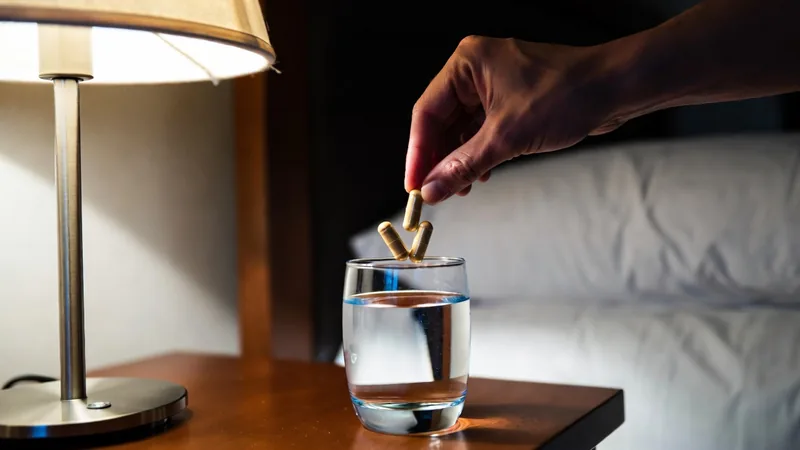
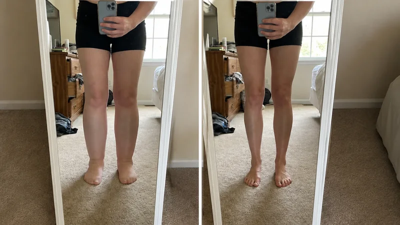
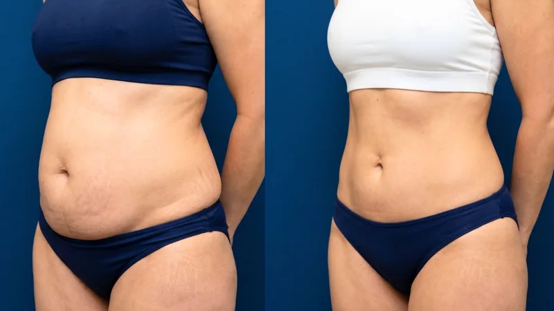
This isn’t about looking younger. It’s about the blood sugar, the blood pressure, the foggy memory and the aches that quietly steal your best years — and the shockingly simple fixes the industry buries, because a healthy you buys nothing from them.
My team spent this year testing the remedies, rituals and loopholes real people over 50 swear by — including a 10-second ‘Liver Filter’ and a bedtime ‘Sugar Reset’ doctors are quietly talking about. The ones that matter most are right below — but don’t stop there; a few of the simplest, strangest tricks are near the bottom, and one of them surprised even us.
The Diabetes Doctor Who Broke Rank: This 30-Second Bedtime “Sugar Reset” Is the One the $500-a-Month Prescription Machine Prayed You’d Never Find
If your blood sugar keeps creeping up no matter how ‘clean’ you eat, it isn’t your willpower and it isn’t your genes. A top diabetes doctor says almost everyone is missing one 30-second step before bed.
People of all ages who add this simple ‘bedtime routine’ are watching their morning numbers settle — and stubborn pounds they’d carried for years start coming off with them.
Scientists believe it works because it targets what’s now thought to be the true biological ‘root cause’ of erratic blood sugar — not the symptom the $500-a-month prescriptions chase.
The pharmaceutical bosses do NOT want this getting around. It costs them nothing to hand you a pill for life.
Watch the short free video now, before it’s pulled. Tap ‘Watch Now’ below.
Neurologists Can’t Explain the 97-Year-Old Who Hasn’t Forgotten a Single Thing Since 1946 — and Her 10-Second Morning “Brain Trick” Is Spreading Fast
Researchers couldn’t explain it: a 97-year-old woman who still remembers what she ate 15 years ago, and the exact dress she wore the day she met her husband.
Her secret traces to one 10-second habit she’s done every morning since she was 14 — one that appears to target the real root of brain fog and low mental energy.
Now thousands of all ages are copying it to think sharper, faster and clearer — some within days.
The billion-dollar ‘brain supplement’ industry does NOT want this simple trick spreading. It threatens the whole shelf.
Watch the short free video before it’s gone. Tap ‘Watch Now’ below.
Plant Bananas in Your Garden and Just Watch
Bananas are not just a tasty snack; they can also work wonders in your garden. Instead of throwing away banana peels, bury them in your soil. Rich in potassium, calcium, and magnesium, banana peels make excellent natural fertilizer. They also repel pests like aphids and snails, keeping your plants safe.
To use, chop banana peels into small pieces and bury them near your plants. As they decompose, they enrich the soil with essential nutrients, making your plants healthier and greener. You can also soak peels in water for 24 hours and use the liquid to water your plants.
Cardiologist Breaks His Silence: The 60-Second Bedtime “Pressure Reset” That Hits the Real Cause — While $200 Pills Just Milk You for Life
If your blood pressure won’t behave — even on the meds — a cardiologist says almost everyone is treating the number instead of the cause.
The real culprit is the slow stiffening of the vessel wall. This simple bedtime ‘pressure reset’ targets that directly, and people are watching their numbers move in the right direction within the first week.
No giving up salt. No giving up coffee. No giving up the foods you love.
The drug industry makes nothing when you fix the cause with a nightly ritual, so they’d rather you never saw this.
Watch the short free video now. Tap ‘Watch Now’ below.
Doctors Won’t Say It Out Loud: 2 Glasses of Wine Are Quietly Wrecking Your Liver After 40 — This 10-Second “Filter” Trick Undoes It Before the First Sip
That foggy, puffy, wrecked feeling the morning after two glasses of wine? It isn’t the alcohol — it’s a toxic byproduct called acetaldehyde that your liver can’t clear fast enough after 40.
This 10-second ‘liver filter’ trick, taken before your first drink, helps the liver break that byproduct down — so you wake up clear and light instead of losing your whole Sunday.
Over 40,000 people now do it before they drink and skip the ‘day-after tax’ completely — no pounding head, no nausea.
The billion-dollar ‘hangover cure’ aisle would rather you kept buying $6 fizzy tablets that don’t touch the real cause.
See the trick in the free video before it’s taken down. Tap ‘Watch the Video’ below.
Fix Wobbly Furniture with a Penny
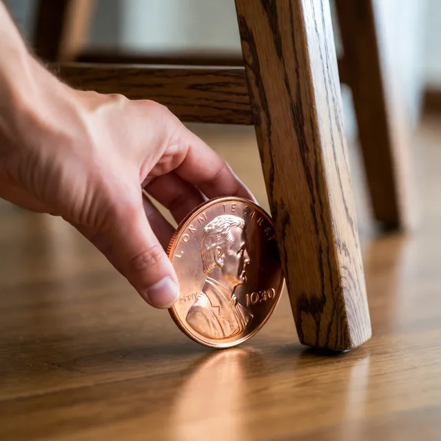
Need to shim a wobbly bench or table, but don’t have time to run to the home center for furniture feet? No worries, just reach for your pocket change!
You can use a coin to shim wobbly furniture in a pinch. Use hot glue to attach the coin to the problem area, adding additional coins as needed. Coins work well as a temporary fix because they come in a variety of thicknesses and cost less than a dollar!
Stop Blaming Your Willpower: a Hidden Hunger Hormone Hijacks Every Diet at Week 6 — This “Ghrelin Loophole” Kills 9 PM Cravings Without the $1,300 Ozempic Shot
If you’ve started and quit three diets this year, stop blaming yourself. There’s a gut-brain hunger signal that hits 4–6 weeks in and is mechanically stronger than any willpower you’ve got.
It’s called the ghrelin rebound — and a 4-ingredient Amazonian method quiets it, so the 3 PM crash and the 9 PM sugar hunt finally switch off.
60,000 women over 35 now use it to hold the deficit that three diets in a row couldn’t — no injections, no $1,300-a-month Ozempic.
The weight-loss-drug industry does NOT want a dollar-a-day method going around.
Take the 30-second quiz to see if it fits you — before it’s pulled. Tap the button below.
If Your Ankles Puff Up and Your Shoes Bite by 6 PM, It Was Never “Just Water” — It’s Trapped Lymph, and This 5-Minute Trick Drains It Overnight
If your ankles puff up and your shoes bite by evening, everyone told you it’s ‘just water.’ It isn’t. It’s lymph fluid your body stopped moving efficiently after 40.
This simple 5-minute at-home routine helps drain the trapped fluid overnight — so you wake up with lighter, less achy legs and ankles you recognize again.
It targets the real cause — a sluggish lymphatic system — instead of a diuretic that just dehydrates you and sends you to the bathroom all night.
Users report a visible difference in the first week.
Watch the short free video. Tap below to see how it works.
Simple Hack for Injury-Free Hammer Use
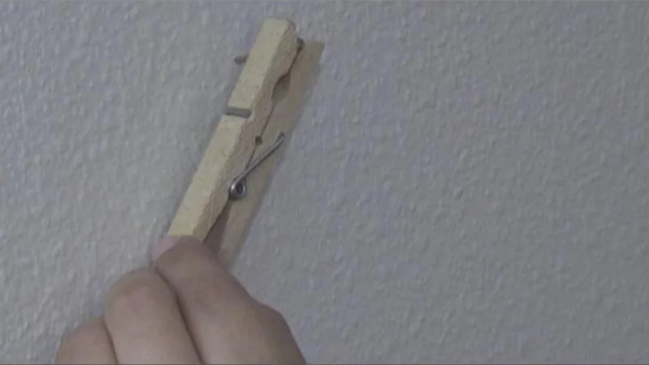
Getting work done around the house can make you feel accomplished — smashing your thumb with a hammer while hanging a picture does not. Here’s how to hang nails without the red thumb and the accidental swear words.
Grab a clothespin and use it to hold the nail in place while you line up your swing with your free hand. Your fingers stay safely out of the strike zone — and your thumb lives to see another DIY project.
Women Are Cancelling $12,000 BBLs After This Weird 60-Second Brazilian “Modelador” Firmed Their Saggy, Cellulite-Dimpled Backside at Home
American moms keep buying $40 ‘firming creams’ that do nothing — meanwhile Brazilian women in their 40s have firmer, smoother backsides than 25-year-olds. It was never genetics, and it was never surgery.
Here’s what no one tells you: American beauty brands skipped an entire product category — the Brazilian ‘modelador’ — because it was legally awkward to market here. So we got sold weak $120 water-creams at Sephora instead.
This one uses Brazilian guaraná (3× the caffeine of coffee) plus the collagen-signal peptide Palmitoyl Tripeptide-5 to hit the real root of crepey, dimpled skin. In a blind dermatologist test, it beat six best-sellers.
190,000 women now do the 60-second ritual every morning. Some ditched the sarong in 28 days.
The brands that pay for that shelf space do NOT want this shown side by side. Tap ‘See the Test Winner’ below for the 2026 results and today’s 64%-off reader coupon — it expires tonight.
It’s Not Age and It’s Not Genes: 80 Million Women Are Losing Their Hair Because of One Thing They Do in the 3 Seconds After Every Shower
Over 80 million women are losing their hair, and almost none of them know the real reason. It isn’t age. It isn’t your mother’s genes.
It’s what happens to the strand in the 3 seconds right after your shower — while the cuticle is wide open. Seal it then, and the breakage that’s quietly thinning your hair stops.
Women using this Brazilian leave-in are seeing thicker-looking, shinier, humidity-proof hair in as little as 15 days — no heat damage, no $60 salon gloss.
It’s going viral for one reason: it’s working.
See the 3-second fix for yourself. Tap below for the 3-second fix.
Both Laid Off in the Same Month — Broke and Terrified. 9 Months Later They Make Money Through an Amazon “Side Door” (No Inventory, No Ads)
When both of them got laid off in the same month, they had two choices: panic, or figure something out. They found a ‘side door’ into Amazon that most sellers never touch.
No warehouse full of inventory. No ad budget. No $5,000 course. Just a laptop at the kitchen table and a simple, repeatable playbook.
Regular people of all ages are now copying it, step by step, to build an extra income stream from home.
The catch? A quiet opportunity like this doesn’t stay quiet once too many people find it.
Watch the free video and see the exact playbook. Tap ‘See the Playbook’ below.
Cool Beverages Fast With a Napkin + Freezer
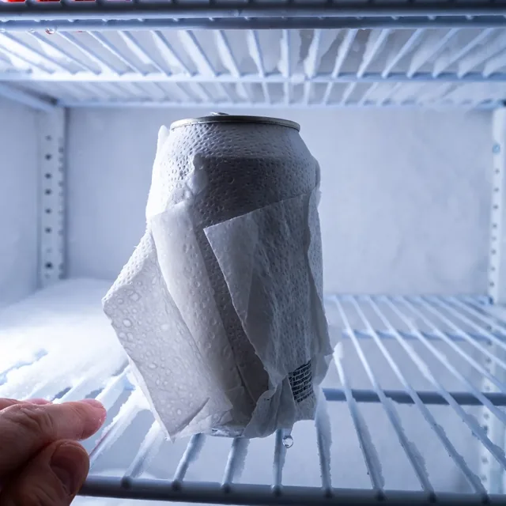
Let’s say you just made it to your family cookout. Everybody is having a good time but the drinks aren’t cold. Sure, you can throw the beverages in the freezer for half an hour, but who wants to wait that long?
Simply wet a napkin before wrapping it around the drink’s container. With the container wrapped in wet paper, set it in the freezer for 15 minutes. The napkin accelerates the cooling process, leaving you with a frosty drink in a fraction of the time.
Wrap an Elastic Band Around a Soap Dispenser
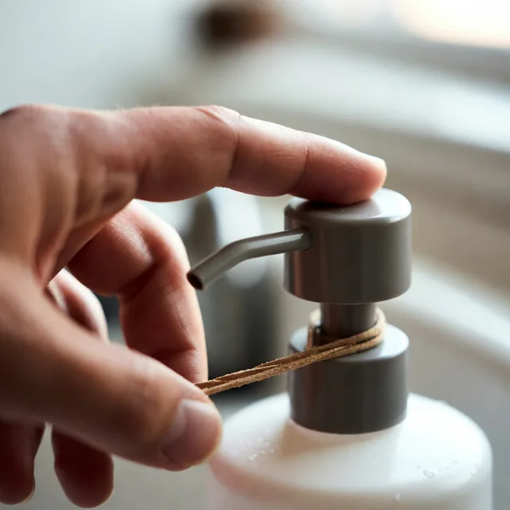
We all, with no exemption, men and women alike, young and old, use too much soap when we bathe and wash our hands. It’s a fact, and this is why we should all wrap an elastic band around our soap dispensers — a great way to be careful with soap usage and not be wasteful.
Just wrap a rubber band around the neck of the pump so it can’t go all the way down. You’ll use a fraction of the soap and won’t run to the store for a new bottle every week.
Easiest Way to Clean Your Microwave
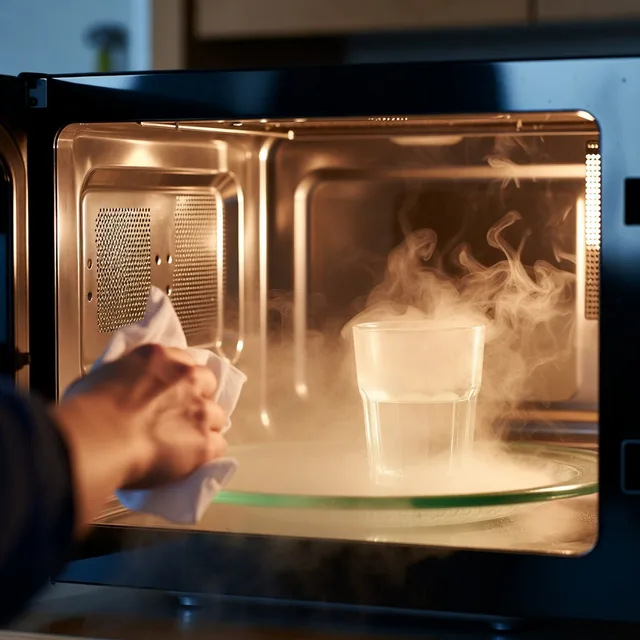
You don’t have to be a neat freak to want a clean microwave at home or in the office. Unfortunately, cleaning your microwave can be a headache in and of itself. Whether it’s a nasty mess or just needs a bit of shine, this hack does the trick.
Simply place a full glass of water inside before turning the machine on. Let it run as steam builds up inside. The steam softens the stains, letting you wipe the remaining residue away in seconds.
Turn a Bread Clip Into a Makeshift Bookmark
Oh, so you don’t have a bookmark, or you just lost yours? No worries! You can use a bread clip as a makeshift bookmark. If you’re reading and suddenly need to mark your spot while you’re out and about, just reach into your wallet and grab the clip.
So having this little trick up your sleeve can definitely come in handy when you least expect it. After all, it’s always better to have a backup plan, just in case you find yourself in a bind without a bookmark!
Max Out Your Microwave
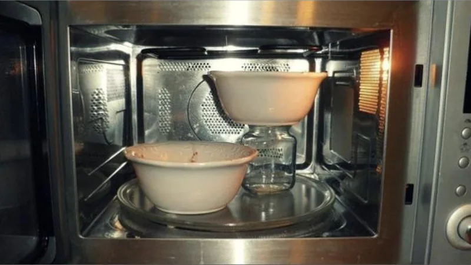
Whether you’re cooking for several people or simply in a hurry, the microwave is a huge help. Unfortunately, most microwaves only fit a single bowl or plate on the turntable.
If you’re low on time and need to heat multiple dishes, use a mason jar or other glass kitchenware to prop up a second container above the first. You’ll likely need to add cooking time for the extra food — so be careful not to bite into anything still cold!
Inventive Use of a Clothing Hanger
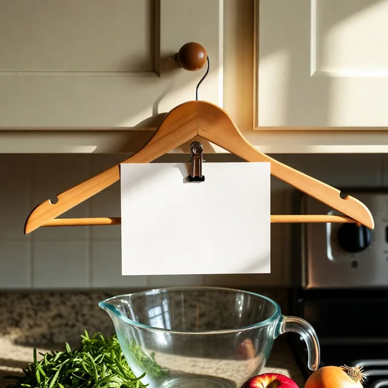
Clothing hangers can be surprisingly flexible for a variety of household projects. Outside of holding your pants up in the closet, a pants hanger can do a number of jobs around the kitchen. One of our favorites is this DIY recipe holder.
By clipping your recipe card or tablet to a pants hanger, you can hang it from a cabinet knob at eye level and read it hands-free while you cook — no splatter on your screen and no lost place. Who said cooking had to be hard?
Keep Cut Avocado Green With a Slice of Onion
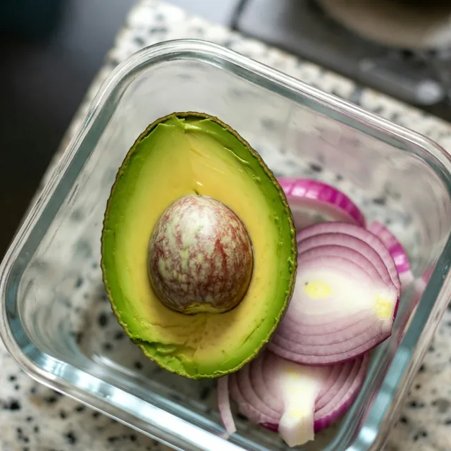
Half an avocado always seems to turn brown by the next day — but there’s a simple fix hiding in your fridge. Store the leftover half in a sealed container next to a few slices of red onion (not touching the flesh).
The sulfur compounds the onion releases slow oxidation far better than lemon juice, so your avocado stays fresh and green until tomorrow. No waste, no brown mush.
Find a Lost Earring Back With a Vacuum + Pantyhose
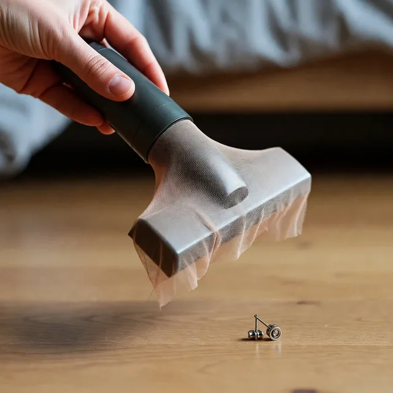
Dropping a tiny earring back on the floor usually means it’s gone for good. Not anymore. Stretch a piece of sheer pantyhose over the end of your vacuum nozzle and secure it with a rubber band.
Run the nozzle slowly over the area where it fell. The suction lifts the earring back off the floor, and the fabric catches it before it disappears into the vacuum — so you can just pluck it off. Works for contact lenses and tiny screws too.
Stop a Cutting Board From Sliding With a Damp Towel
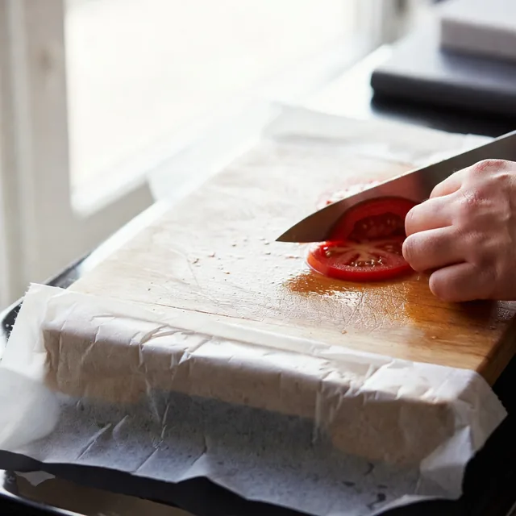
A cutting board that slides around the counter is how most kitchen accidents happen. There’s a two-second fix the pros use every day.
Lay a damp paper towel or dish cloth flat underneath the board before you start. The moisture creates instant grip, so the board stays rock-solid while you chop — safer, faster, and no white-knuckling the knife.
Unclog a Slow Sink Overnight With Salt and Baking Soda
A slow-draining kitchen sink almost never needs a plumber — the fix is probably already in your pantry. Mix half a cup of salt into a cup of baking soda and pour it straight down the drain right before bed.
Let it sit overnight while you sleep, then flush it through with a kettle of boiling water in the morning. The salt scours the grease the baking soda loosens, and the drain runs clear again — no chemicals, no callout fee.
Open Brutal Plastic Clamshell Packs With a Can Opener
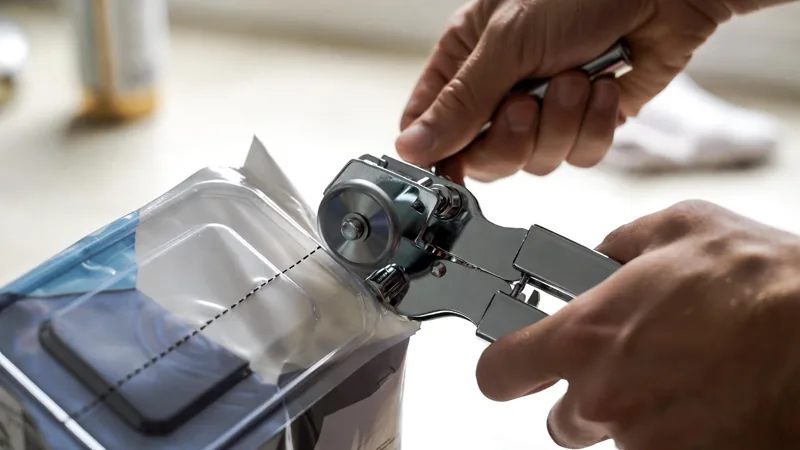
Those hard plastic clamshell packages send thousands of people to the ER with cuts every year. Skip the scissors and reach for your kitchen can opener instead.
Clamp it onto the sealed edge exactly like you would a tin can, and crank. The rotary wheel slices the rigid plastic in a clean, safe line — the package pops open with no jagged edges and no bleeding thumbs.
Kill Shoe Odor Overnight With a Couple of Tea Bags
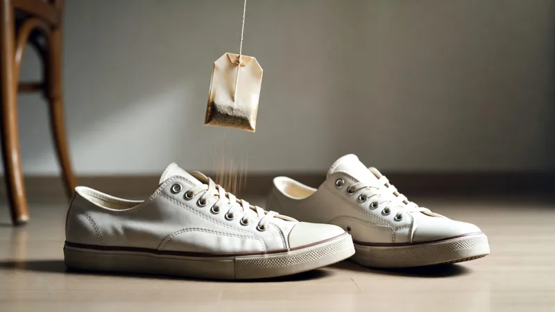
Before you toss a pair of smelly sneakers, try the cheapest deodorizer in your kitchen. Drop a dry tea bag into each shoe and leave them overnight.
The dry leaves quietly pull out the moisture and the odor that rides along with it, so by morning the shoes smell neutral again. The cheapest supermarket tea works just as well as any $12 shoe spray.
No Quarter for the Cart? A Metal Key Sets It Free
Stuck at the store with a full list and no coin for the cart lock? The top of the metal key already in your pocket can pop it loose.
Slide the key tip into the coin slot and press it in like you would a quarter — the chain releases and you’re rolling. Snap it back the same way when you’re done to free your token.
Skip the Ice Scraper — Bag Your Mirrors the Night Before
No garage? You can still wake up to ice-free mirrors on the coldest mornings. The night before a hard freeze, slip a sandwich bag over each side mirror and tuck it snug.
The plastic stops frost from bonding to the glass, so in the morning you just peel the bags off and drive — no scraping, no waiting on the defroster. Ten seconds at night saves you ten shivering minutes at dawn.
Tame the Freezer Chaos With a Handful of Chip Clips
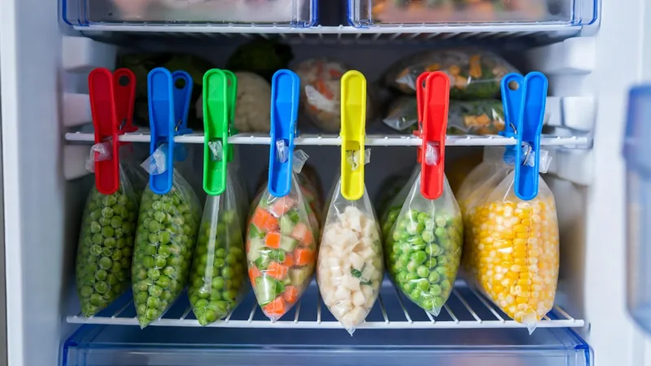
If half-open bags of frozen veg keep avalanching out at you, this two-dollar fix ends it. Clip each open bag shut with a sturdy chip clip and hang it off the wire shelf.
The bags stay sealed so nothing spills or freezer-burns, and hanging them frees the shelf below — suddenly the freezer looks twice as big and you can actually find what you want.
Beat a Stuck Jar Lid With a Strip of Tape

Before you bang a stubborn jar on the counter, try the trick that saves your wrist and the jar. Press a strip of packing or duct tape across the lid, leaving a tail to grab.
Pull the tail sideways and the lid twists open with almost no effort — the tape hands you the leverage your bare grip can’t. Works on pickles, sauces, even paint cans sealed shut for years.
A Weak, Sputtering Faucet? One Spray Usually Fixes It
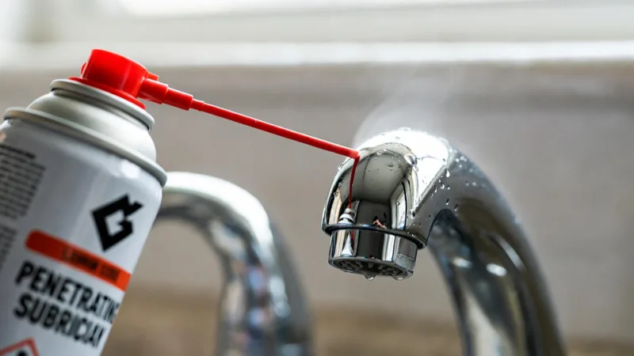
Hard-water buildup, not a broken part, is usually what makes a faucet sputter or a tub spout dribble. A little penetrating spray lubricant clears it in seconds.
Aim the straw at the aerator or the diverter valve, give it two short bursts, then run the water to flush it. The mineral gunk breaks loose and the flow snaps back to full — no tools, no plumber.
Back Out a Stripped Screw With a Wide Rubber Band
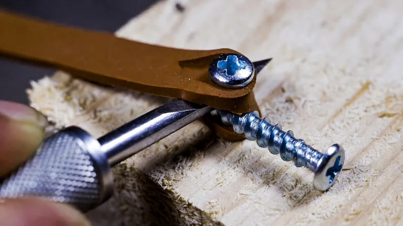
When a screwdriver just spins in a stripped screw head, don’t reach for the drill yet. Lay a wide rubber band flat over the screw head and press the driver firmly into it.
The rubber fills the chewed-up grooves and grabs the metal, giving your driver enough bite to turn the screw right out. It’s the difference between a two-second fix and drilling the whole thing apart.
Lift Dents in Your Carpet With a Single Ice Cube
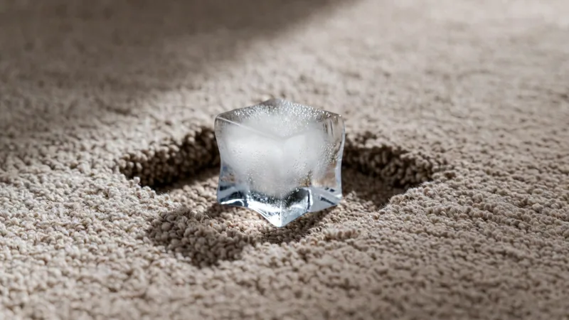
Those deep dents furniture legs leave in the carpet aren’t permanent. Set an ice cube right on each dent and walk away.
As it melts, the crushed fibers slowly drink up the water and swell back to full height. Blot the spot dry, fluff it with your fingers or a spoon, and the dent is gone — like the couch was never there.
Soften Rock-Hard Brown Sugar With a Slice of Bread
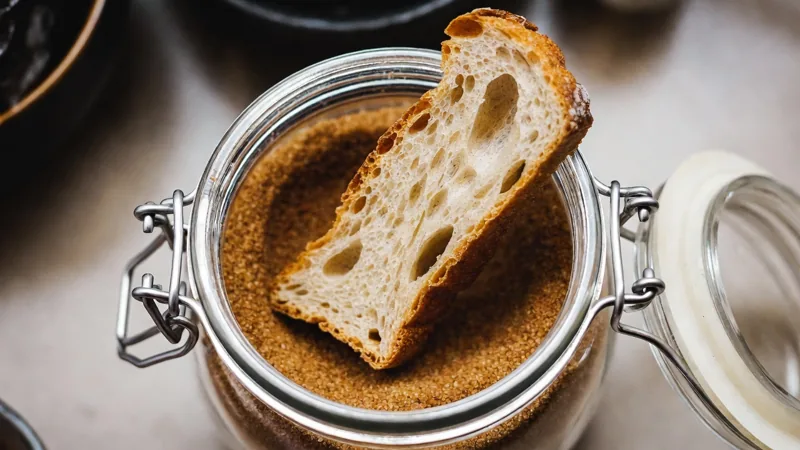
Brown sugar that’s turned into a brick isn’t ruined — it’s just thirsty. Drop a single slice of fresh bread into the container and seal the lid overnight.
The sugar pulls the moisture out of the bread and turns soft and scoopable again by morning. No microwave, no hammer — just one slice of bread you were probably going to toss anyway.
Stop a Pot From Boiling Over With a Wooden Spoon
A pot of pasta water about to erupt onto your stove has a two-second fix. Lay a wooden spoon flat across the top of the pot.
The rising foam hits the cool, water-repelling wood and collapses before it can climb over the rim. As long as the spoon stays dry it keeps the bubbles in check — no more hissing mess to scrub off the burner.
Peel Off Any Sticky Label Clean With a Hair Dryer
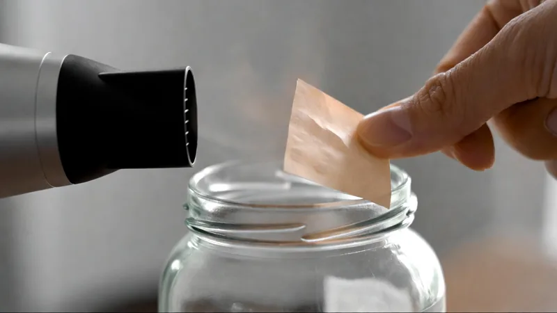
Price stickers and jar labels that tear into a gummy mess don’t stand a chance against a little heat. Aim a hair dryer at the label for twenty or thirty seconds on high.
The warmth softens the adhesive underneath, so the label lifts off in one clean piece with no sticky residue left behind. Works on glass jars, plastic, laptops, and gift boxes you want to reuse.
The Tips That Could Actually Change Your Life
Out of everything on this page, these are the ones readers message us about most — the small daily changes that made the biggest difference. If you skim past everything else, don’t skip these.
The Bedtime ‘Sugar Reset’ Trick★★★★★ 4.63 · 8,495 savesSee how »The 10-Second Morning ‘Brain Trick’★★★★★ 4.82 · 17,116 savesSee how »The Bedtime ‘Pressure Reset’ (Beet Trick)★★★★★ 4.79 · 9,204 savesSee how »The 10-Second ‘Liver Filter’ Before Wine★★★★★ 4.81 · 10,940 savesSee how »The ‘Ghrelin Loophole’ for 9 PM Cravings★★★★★ 4.77 · 10,472 savesSee how »The 5-Minute Puffy-Ankle Overnight Drain★★★★★ 4.70 · 7,338 savesSee how »The 60-Second Brazilian ‘Modelador’★★★★★ 4.93 · 23,610 savesSee how »The 3-Second After-Shower Hair Fix★★★★★ 4.91 · 11,088 savesSee how »The Amazon ‘Side Door’ Extra Income★★★★★ 4.88 · 6,201 savesSee how »Advertisement. This page is a paid advertisement and not a news article or editorial content. “Smart Living Daily” is a content brand used for this advertisement. Product names and trademarks are the property of their respective owners. Ratings and reviews shown are illustrative. We may earn a commission if you buy through links on this page. Health-product statements have not been evaluated by the FDA and are not intended to diagnose, treat, cure or prevent any disease; individual results vary. © 2026 Smart Living Daily.